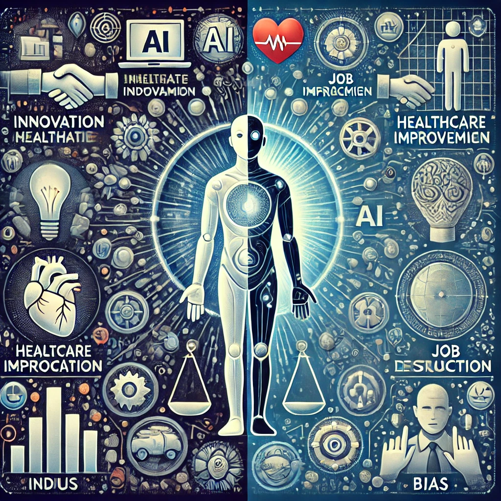

Introduction
Artificial Intelligence, also known as AI, has been incorporated in many parts of the human life. While it has done many good, there are issues and concerns when AI-related incidents happen. There are many areas that need to be looked into and addressed in the concept of ethical considerations.
- Data Privacy
- Transparency
- Oversight
- Job displacement
